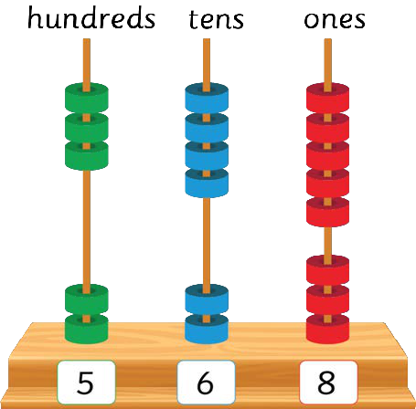

Or
223 + 345 =

Steps
1. Add ones: 3 + 5 = 8. Write 8 in the ones place.
345 + 223 = 8.
2. Add tens: 2 + 4 = 6. Write 6 in the tens place.
345 + 223 = 68.
3. Add hundreds: 3 + 2 = 5. Write 5 in the hundreds place.
345 + 223 = 568.
Therefore, 345 + 223 = 568.
Example 2
512 + 415 =
Steps
1. Add ones: 2 + 5 = 7. Write 7 in the ones place.
512 + 415 = 7
2. Add tens: 1 + 1 = 2. Write 2 in the tens place.
512 + 415 = 27
3. Add hundreds: 5 + 4 = 9. Write 9 in the hundreds place.
512 + 415 = 927
Therefore, 512 + 415 = 927
32